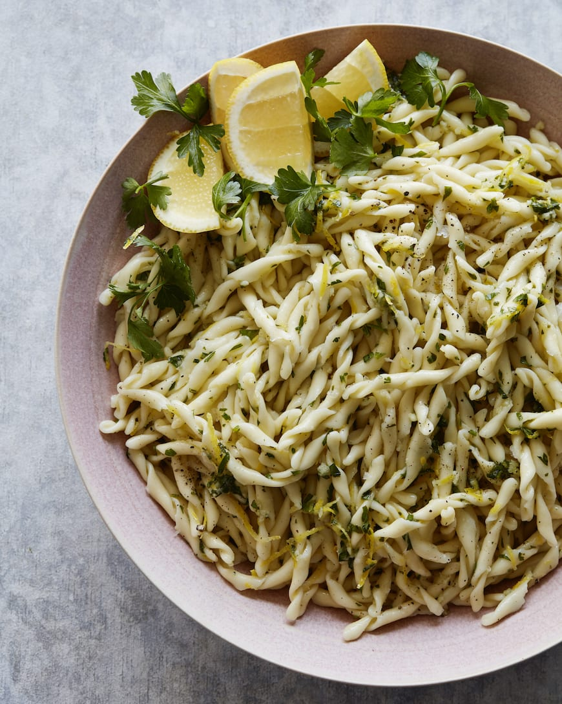

Pasta gremolata met ricotta

Ingredienten
- ½ kopje gehakte peterselie
- 6 teentjes knoflook fijngehakt
- Grof geraspte schil van 2 citroenen plus het sap van 1 citroen
- 1/4 kopje extra vergine olijfolie
- Kosher zout en versgemalen peper naar smaak
- 1 pond pasta
Ingredienten
- Meng in een kom de peterselie, knoflook, citroenschil en citroensap. Roer om te combineren. Breng op smaak
met zout, peper en olijfolie. (U kunt dit ook in een blender maken als u dat liever doet)
- Kook de pasta al dente. Laat uitlekken en zet apart.
- Schep in een grote kom de gremolata met de pasta tot deze goed bedekt is. Serveer onmiddellijk.